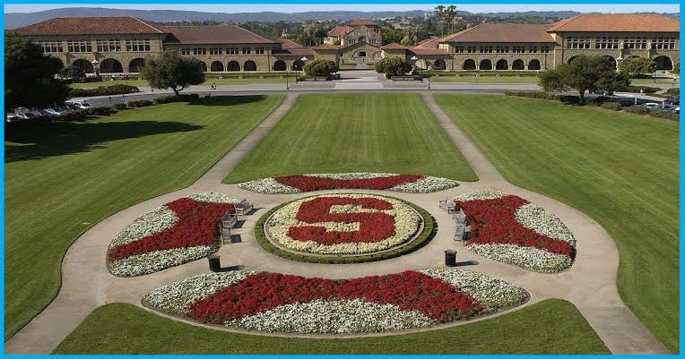
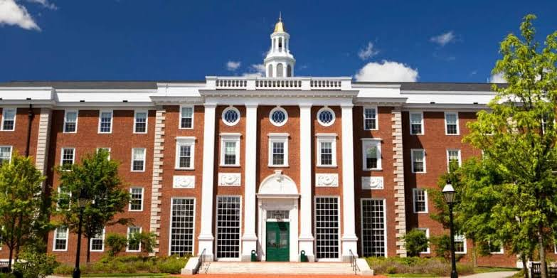
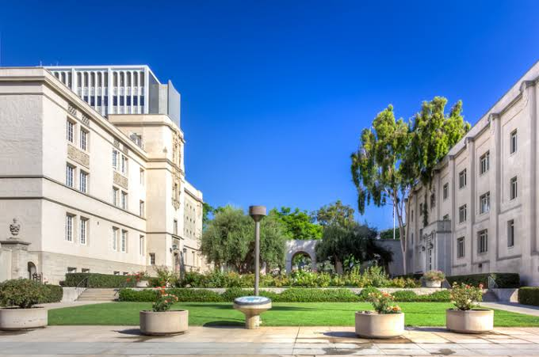
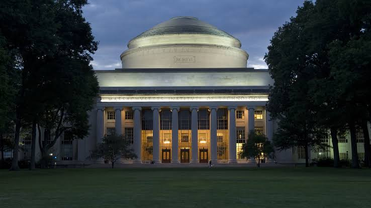
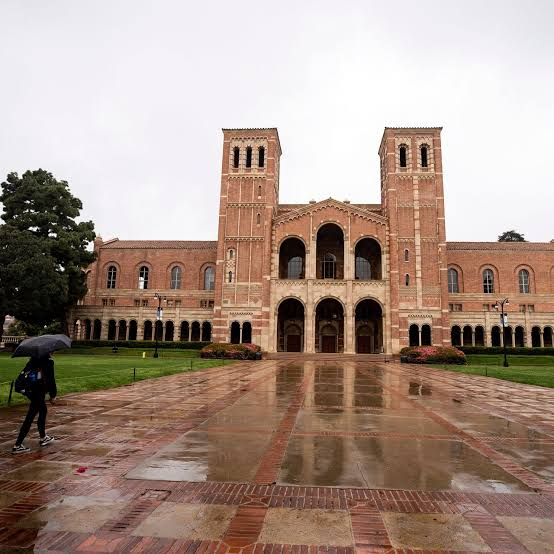
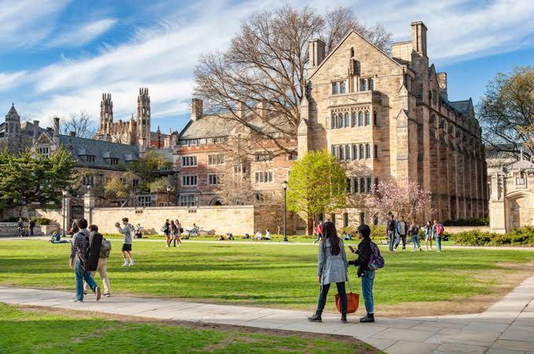
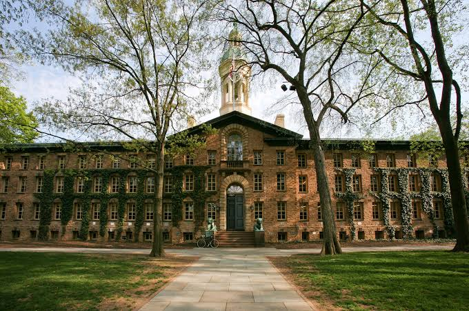
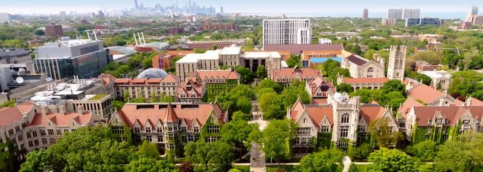
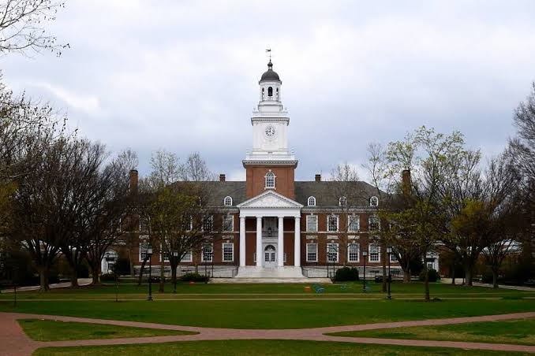
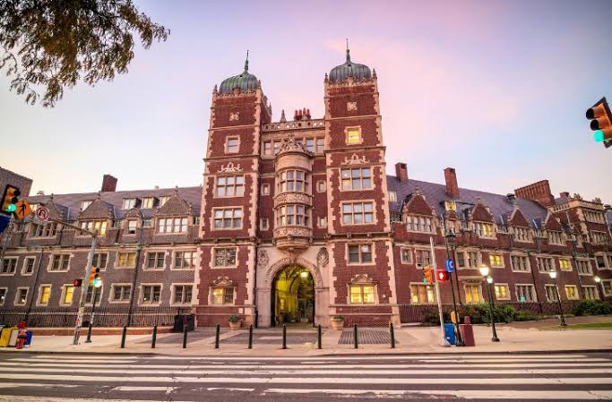

Research Institutes and importance of research in Science and Technical Field
Over the past century the Institute of Physics (IOP), which publishes Physics World, has strengthened the case for physics by highlighting the many benefits that the discipline brings to society. Those advantages include not just technological developments but education too, both of which allow physicists to apply their knowledge and skills to understand and improve the world. However, training a person to “think like a physicist” requires time, effort and a supportive environment, which is why strengthening physics teaching in schools and boosting diversity are so important.
While the foundations of physics knowledge are usually established at school, it is at university that physicists really gain the skills that they need for a successful career in academia or industry. Such skills are a mix of the highly technical – for example, advanced computer simulations – and the generic such as communication and team-working skills. So, to train the next generation of physicists as best as we can, it is essential we understand not just how students learn but how students learn physics too.

Research Institutes in United States of America
Stanford University

Stanford University, officially Leland Stanford Junior University, is a private research university in Stanford, California. The campus occupies 8,180 acres, among the largest in the United States, and enrolls over 17,000 students. Stanford is ranked among the best universities in the world by academic publications. Stanford was founded in 1885 by Leland and Jane Stanford in memory of their only child, Leland Stanford Jr., who had died of typhoid fever at age 15 the previous year. Leland Stanford was a U.S. senator and former governor of California who made his fortune as a railroad tycoon. The school admitted its first students on October 1, 1891, as a coeducational and non-denominational institution. Stanford University struggled financially after the death of Leland Stanford in 1893 and again after much of the campus was damaged by the 1906 San Francisco earthquake. Following World War II, provost Frederick Terman supported faculty and graduates' entrepreneurialism to build self-sufficient local industry in what would later be known as Silicon Valley.
Harvard University

Harvard University is a private Ivy League research university in Cambridge, Massachusetts. Established in 1636and named for its first benefactor, the Puritan clergyman John Harvard, Harvard is the oldest institution of higher learning in the United States and among the most prestigious in the world. The Massachusetts colonial legislature authorized Harvard's founding, "dreading to leave an illiterate ministry to the churches, when our present ministers shall lie in the dust"; though never formally affiliated with any denomination, in its early years Harvard College primarily trained Congregational clergy. Its curriculum and student body were gradually secularized during the 18th century, and by the 19th century, it had emerged as the central cultural establishment among the Boston elite. Following the American Civil War, President Charles William Eliot's long tenure (1869–1909) transformed the college and affiliated professional schools into a modern research university; Harvard became a founding member of the Association of American Universities in 1900. James B. Conant led the university through the Great Depression and World War II; he liberalized admissions after the war.
California Institute of Technology

The California Institute of Technology (Caltech) is a private research university in Pasadena, California. The university is known for its strength in science and engineering, and is one among a small group of institutes of technology in the United States which is primarily devoted to the instruction of pure and applied sciences. Caltech was founded as a preparatory and vocational school by Amos G. Throop in 1891 and began attracting influential scientists such as George Ellery Hale, Arthur Amos Noyes, and Robert Andrews Millikan in the early 20th century. The vocational and preparatory schools were disbanded and spun off in 1910 and the college assumed its present name in 1920. In 1934, Caltech was elected to the Association of American Universities, and the antecedents of NASA's Jet Propulsion Laboratory, which Caltech continues to manage and operate, were established between 1936 and 1943 under Theodore von Kármán.
Massachusetts Institute of Technology

Massachusetts Institute of Technology (MIT) is a private land-grant research university in Cambridge, Massachusetts. Established in 1861, MIT has since played a key role (MIT150) in the development of modern technology and science, ranking it among the most prestigious academic institutions in the world. Founded in response to the increasing industrialization of the United States, MIT adopted a European polytechnic university model and stressed laboratory instruction in applied science and engineering. The institute has an urban campus that extends more than a mile (1.6 km) alongside the Charles River, and encompasses a number of major off-campus facilities such as the MIT Lincoln Laboratory, the Bates Center, and the Haystack Observatory, as well as affiliated laboratories such as the Broad and Whitehead Institutes.
University of California

The University of California, Berkeley (UC Berkeley, Berkeley, Cal, or California) is a public land-grant research university in Berkeley, California. Established in 1868 as the University of California, it is the state's first land-grant university and the first campus of the University of California system. Its fourteen colleges and schools offer over 350 degree programs and enroll some 31,000 undergraduate and 12,000 graduate students. Berkeley is ranked among the world's top universities by major educational publications. A founding member of the Association of American Universities, Berkeley hosts many leading research institutes, including the Mathematical Sciences Research Institute and the Space Sciences Laboratory. It founded and maintains close relationships with three national laboratories at Berkeley, Livermore and Los Alamos, and has played a prominent role in many scientific advances, from the Manhattan Project and the discovery of 16 chemical elements to breakthroughs in computer science and genomics. Berkeley is also known for political activism and the Free Speech Movement of the 1960s.
Yale University

Yale University is a private Ivy League research university in New Haven, Connecticut. Founded in 1701 as the Collegiate School, it is the third-oldest institution of higher education in the United States and one of the nine Colonial Colleges chartered before the American Revolution. The Collegiate School was renamed Yale College in 1718 to honor the school's largest private benefactor for the first century of its existence, Elihu Yale. Yale University is referred to as a member of the Big Three (colleges), is consistently ranked as one of the top universities and is considered one of the most prestigious in the nation and in the world. Chartered by Connecticut Colony, the Collegiate School was established in 1701 by clergy to educate Congregational ministers before moving to New Haven in 1716. Originally restricted to theology and sacred languages, the curriculum began to incorporate humanities and sciences by the time of the American Revolution. In the 19th century, the college expanded into graduate and professional instruction, awarding the first PhD in the United States in 1861 and organizing as a university in 1887. Yale's faculty and student populations grew after 1890 with rapid expansion of the physical campus and scientific research.
Princeton University

Princeton University is a private Ivy League research university in Princeton, New Jersey. Founded in 1746 in Elizabeth as the College of New Jersey, Princeton is the fourth-oldest institution of higher education in the United States and one of the nine colonial colleges chartered before the American Revolution. The institution moved to Newark in 1747, and then to the current site nine years later. It officially became a university in 1896 and was subsequently renamed Princeton University. The university is governed by the Trustees of Princeton University and has an endowment of $26.6 billion, the largest endowment per student in the United States. Princeton provides undergraduate and graduate instruction in the humanities, social sciences, natural sciences, and engineering to approximately 8,500 students on its 600 acres (2.4 km2) main campus. It offers postgraduate degrees through the Princeton School of Public and International Affairs, the School of Engineering and Applied Science, the School of Architecture and the Bendheim Center for Finance. The university also manages the Department of Energy's Princeton Plasma Physics Laboratory and is home to the NOAA's Geophysical Fluid Dynamics Laboratory. It is classified among "R1: Doctoral Universities – Very high research activity" and has one of the largest university libraries in the world.
University of Chicago

The University of Chicago (UChicago, U of C, or Chicago) is a private research university in Chicago, Illinois. Founded in 1890, its main campus is located in Chicago's Hyde Park neighborhood. It enrolled 16,445 students in Fall 2019, including 6,286 undergraduates and 10,159 graduate students. The University of Chicago is ranked among the best universities in the world by major education publications, and it is among the most selective in the United States. The university is composed of one undergraduate college and five graduate research divisions, which contain all of the university's graduate programs and interdisciplinary committees. Chicago has eight professional schools: the Law School, the Booth School of Business, the Pritzker School of Medicine, the Crown Family School of Social Work, Policy, and Practice, the Harris School of Public Policy, the Divinity School, the Graham School of Continuing Liberal and Professional Studies, and the Pritzker School of Molecular Engineering. The university has additional campuses and centers in London, Paris, Beijing, Delhi, and Hong Kong, as well as in downtown Chicago.
Johns Hopkins University

The Johns Hopkins University (Johns Hopkins, Hopkins, or JHU) is a private research university in Baltimore, Maryland. Founded in 1876, the university was named for its first benefactor, the American entrepreneur and philanthropist Johns Hopkins. Johns Hopkins is considered the first research university in the United States. Hopkins's $7 million bequest to establish the university was the largest philanthropic gift in the history of the United States up to that time. Daniel Coit Gilman, who was inaugurated as Johns Hopkins' first president on February 22, 1876, led the university to revolutionize higher education in the U.S. by integrating teaching and research. In 1900, Johns Hopkins became a founding member of the American Association of Universities. The university has since led all U.S. universities in annual research expenditures.
University of Pennsylvania

The University of Pennsylvania (Penn or UPenn) is a private Ivy League research university in Philadelphia, Pennsylvania. The university, established as the College of Philadelphia, claims a founding date of 1740 and is one of the nine colonial colleges chartered prior to the U.S. Declaration of Independence. Benjamin Franklin, Penn's founder and first president, advocated an educational program that trained leaders in commerce, government, and public service, similar to a modern liberal arts curriculum with a practical perspective. Penn has four undergraduate schools as well as twelve graduate and professional schools. Schools enrolling undergraduates include the College of Arts and Sciences, the School of Engineering and Applied Science, the Wharton School, and the School of Nursing. Penn's "One University Policy" allows students to enroll in classes in any of Penn's twelve schools. Among its highly ranked graduate and professional schools are a law school whose first professor wrote the first draft of the United States Constitution, the first school of medicine in North America (Perelman School of Medicine, 1765), and the first collegiate business school (Wharton School, 1881).